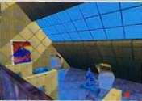
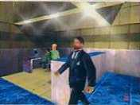
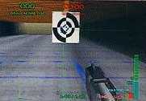

|
.
| Perfect
Dark Version Beta : Entrainement |
| Cette
toute petite Page montre 3 Photos sans grande importance, mais les
voici pour le plaisir.
On voit avec le Petit Carré Rouge, signe que
l'on pouvait agresser ses Collegues de L'Institut... |



L'Image ci-dessus à Droite montre une Cible Beta. Bien qu'elles aient été changées, vous pouvez toujours en voir une dans le Niveau Datadyne 2 - Investigation. C'est la Cible sur laquelle s'entraine un Garde avec le K7 Avenger. Oubli ou Volontaire ? Je penche pour volontaire, pour se démarquer des Cibles de l'Institut Carrington, et marquer une Différence. |